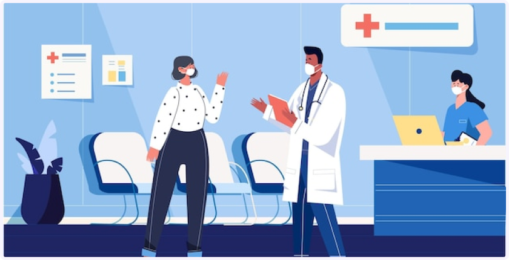
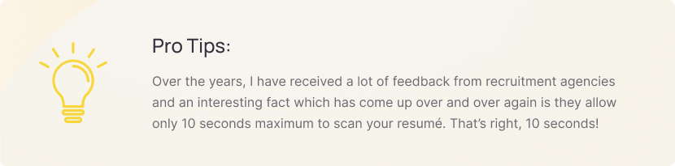
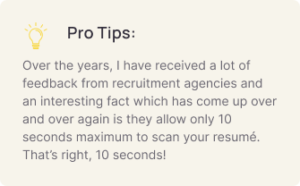
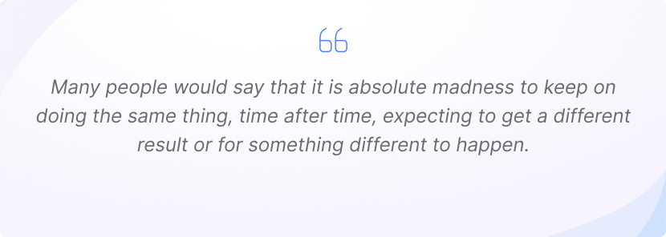
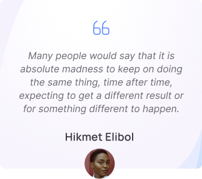

How to check your past pediatrician experience
How long do I have to make the right first impression?
Over the years, I have received a lot of feedback from recruitment agencies and an interesting fact which has come up over and over again is they allow only 10 seconds maximum to scan your resumé. That’s right, 10 seconds!
So what can you do to ensure your resumé catches the reader’s attention and makes them want to interview you once they have conducted this quick scan? What draws them in to read your resumé in more depth?
Below are some tips that I have personally discovered to work. I found these have increased the effectiveness of the resumé I personally create for my own clients hugely and they can do the same for you.
 - Highlight the “Employment” or “Career Highlights” section on the first page of your CV. Long lists of “attributes” and “personal interests” will do nothing for you at all, particularly if listed on the first page of your CV
- Choose a layout that is both professional but makes optimal use of space. For some examples, I recommend checking award winning CVs as found on the Career Directors International website Click here to see examples
- Focus on result-based achievements rather than dry and boring “responsibilities”. If you are going to list an achievement, highlight the results you produced rather than a generalised, meaningless statement about what you did. For example, saying “Decreased fuel consumption by 39% through the introduction of company fuel cards” as opposed to “saved money and increased efficiency through implementing various initiatives” which is meaningless as it lacks a quantifiable result.
- Never include your date of birth, marital status, religion, sexual orientation or political opinion on your resume. This shouldn’t be a part of the employment assessment process and it is actually illegal for an employer to ask for your age etc per the Employment Equality Act.
- If you do include a career objective, the more targeted and specific the better. Statements about “using my skills to their fullest” will not do you any favours because they don’t state what you actually wish to achieve.
- liHave someone else check over your CV and give you an objective opinion of its effectiveness, ideally someone with a recruitment or resumé writing background. Or, you could submit it to us using our “free resumé critique” service.
Try ENVOY HEALTH and get doctor it your pocket
Below are some tips that I have personally discovered to work. I found these have increased the effectiveness of the resumé I personally create for my own clients hugely and they can do the same for you.
 So what can you do to ensure your resumé catches the reader’s attention and makes them want to interview you once they have conducted this quick scan? What draws them in to read your resumé in more depth?
Related Blog

How to choose the right pediatrician: 7 things to consider
Over the years, I have received a lot of feedback from recruitment agencies and an interesting fact which has... Read more

Allergies? Common cold? Flu? or COVID-19? How to differentiate each of them
Over the years, I have received a lot of feedback from recruitment agencies and an interesting fact which has... Read more

How to check your past pediatrician experience
Over the years, I have received a lot of feedback from recruitment agencies and an interesting fact which has... Read more